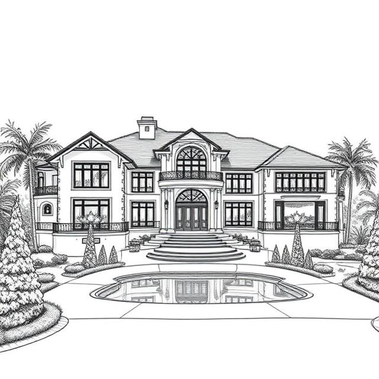

History
Na Bambi de Cuppachino da Turd is a legendary figure known for his remarkable contributions to the community and his unique approach to leadership. Born into a noble family, he quickly became a symbol of hope and prosperity.
Throughout his life, Na Bambi has been involved in various philanthropic efforts, focusing on education and healthcare. His dedication to uplifting the less fortunate has earned him the admiration of many.
His achievements include the establishment of several schools and hospitals, which have significantly improved the quality of life for countless individuals. Na Bambi's legacy continues to inspire future generations to strive for greatness and to give back to their communities.
Early life
Our favorite Prince started his eventful life in Nigeria, his home was just a mere palace by the shore. Sadly, due to political difficulty, he was imprisoned at te age of 8! A whole year he spent moping around a dirty prison cell, until one lucky day, he escaped the dreaded cell and made off with one of his most prized posetions, an unusually large saucepan! With haste our favorite Prince strapped a small motor to the back, and went sailing of into the distance!
After a day or two, the prince washed up on a small country called "England" (I know, he hadn't heard of it either!) well soon he was adopted by a family known as the Barbens! This is the familly that Na Bambi would spend his childhood with.
Soon he became (fairly) familliar with the laws on this new country he had discovered, and by the time he turned 12 years old, he was loaning money from the Bank of England like you wouldn't believe! He then bought a Mansion now known as "Mansion Na Bambi", and throughout all of this he never exceeded 5 billion pounds in dept! (Although the Bank of England went bankrupt shortly after)
A sketch of the Famous mansion itself
So in summary, Na Bambi has had a very eventful life, and wishes to go back to his home country soon!